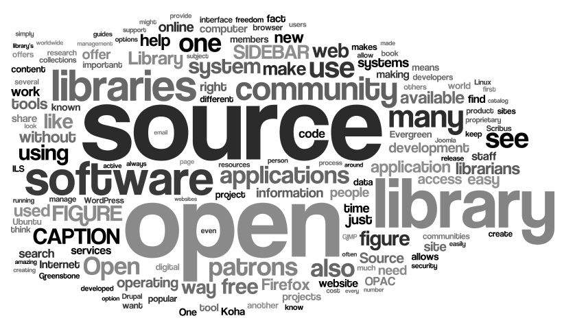

Learn More...
...in General
A great place to learn more about open-source and the free software movement is Red Hat's OpenSource.com. This site provides excellent resources to learn about free or open software. It also provides an excellent community to get connected with open-source developers and learn about their projects and experience.
If you are interested in moving to an open model, the Open Source Initiative provides some greate starting points and guides tailored for everyone from the developer to the businessman, to the average user.

...about Open-Source Projects
There are many great open-source projects. Some of the ones we use on this site include projects such as:
Cloud9
Cloud9 is amazing. If you are a developer who has more than
one computer, it is a huge time saver. It is an online IDE
for web development. When linked with a Docker VM, it provides
testing domains for websites. All of the development for this
site was done using Cloud9's collaboration features.
Their Website
Three.js
Three.js is an easy to use interface for the WebGL platform.
It allows developers to create beautiful 3D effects on their
websites. In fact, the 3D 'ocean' on the homepage was made using
Three.js.
Their Website
jQuery
jQuery is a library for JavaScript that provides a simplified
syntax, and a number of useful features and shortcuts. The majority
of the JavaScript on this site was done using jQuery.
Their Website
Bootstrap
Bootstrap is a responsive design engine that greatly simplifies
responsive web development, while providing a clean and usable
HTML format. This entire website was build on Bootstrap.
Their Website.
These are just a few of the projects incorperated in this site. For a full list, refer to the carousel on the Homepage
...Open-Source Organizations
There area number of famous open-source companies, though not famous, perhaps in the sense that you have heard of them, but in the sense that they are some of the biggest infrastructure and most successful background tech companies of all time. These include operating system companies like Canonical, the company behind the operating system Ubuntu that drives many businesses and computers including retail giant Walmart. Or perhaps RedHat, the leader in open-source for businesses, and makers of RedHat Enterprise Linux, for corperations, who's installations rival that of Microsoft's Windows OS.
Or perhaps something subtle, like the Document Foundation, makers of LibreOffice, the open-source alternative to Microsoft Office. Equally important is the Apache Foundation, makers of the Apache Web Server that serves more than half the internet. The point being made is that Open-Source companies are everywhere, you just have to look.